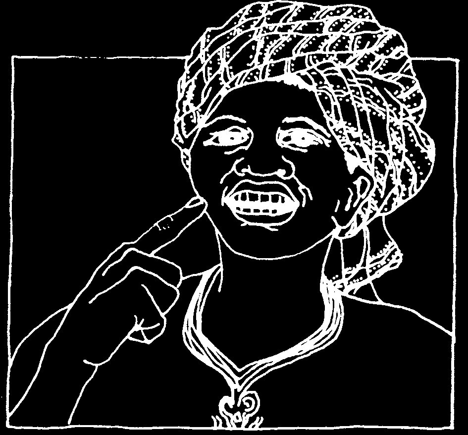

INTRODUCTION
by David Werner
A healthy tooth is a living part of the body. It is connected by 'life-lines’ of blood and nerve to a person’s heart and brain. To separate the tooth from the body, or even to interrupt those 'life-lines’, means death to the tooth. It also means pain and injury to the body, to the person.
Let us look at it another way. The health of the teeth and gums is related to the health of the whole person, just as the well-being of a person relates to the health of the entire community.
Because of this, the usual separation between dentistry and general health care is neither reasonable nor healthy. Basic care of the teeth and gums— both preventive and curative—should be part of the 'know-how’ of all primary health care workers. Ideally, perhaps, Where There Is No Dentist should be a part of Where There Is No Doctor. Think of it as a companion volume, both to Where There Is No Doctor and Helping Health Workers Learn.
Murray Dickson has taken care to write this book in a way that will help the readers see dental care as part of community health and development. The approach is what we call 'people centered.’
Where There Is No Dentist is a book about what people can do for themselves and each other to care for their gums and teeth. It is written for:
• village and neighborhood health workers who want to learn more about dental care as part of a complete community-based approach to health;
• school teachers, mothers, fathers, and anyone concerned with encouraging dental health in their children and their community; and
• those dentists and dental technicians who are looking for ways to share their skills, to help people become more self-reliant at lower cost.
Just as with the rest of health care, there is a strong need to
'deprofessionalize’ dentistry—to provide ordinary people and community workers with more skills to prevent and cure problems in the mouth. After all, early care is what makes the dentist’s work unnecessary—and this is the care that each person gives to his or her own teeth, or what a mother does to protect her children’s teeth.
While dental disease is decreasing in richer countries, it is on the increase in most poor countries. One reason for this is that people are eating fewer traditional (unrefined) foods and more pre-packaged commercial foods, often sweetened with refined sugar.
Even as the need for dental care is growing, there are still far too few dentists in poor countries. Most of those few work only in the cities, where they serve mostly those who can afford their expensive services.
People in many countries cannot afford to pay for costly professional dental care. Even in rich countries, persons who do not have dental insurance often do not get the attention they need—or go into debt to get it.
Two things can greatly reduce the cost of adequate dental care: popular education about dental health, and the training of primary health workers as dental health promoters. In addition, numbers of community dental technicians can be trained—in 2 to 3 months plus a period of apprenticeship—to care for up to 90% of the people who have problems of pain and infection.
Dentists’ training usually includes complicated oral surgery, root canal work, orthodontics (straightening teeth), and other complex skills. Yet most dentists rarely do more than pull, drill, and fill teeth—skills that require a fraction of the training they have received. The simpler, more common dental problems should be the work of community dental technicians who are on the front lines (the villages), with secondary help from dentists for more difficult problems.
Would this reduce quality of service? Not necessarily. Studies have shown that dental technicians often can treat problems as well as or better than professional dentists. In Boston (U.S.A.), for example, a study showed many of the basic treatments commonly given by dentists to be done just as well, and often better, by dental technicians with much shorter training.
Fortunately, in some countries skilled dental technicians have managed to become the major providers of the most needed dental services. In India, there are still 'street-corner’ dental technicians with footpedal drills, who drill and fill teeth at remarkably low cost.
In Honduras, dental technicians (who learn largely from each other, starting as helpers) have formed their own union. Their political strength was tested when, in the town of Trujillo, a dentist tried to put a technician out of business. The local technician had removed an infected root left mistakenly by the dentist. The technician had commented on the dentist’s carelessness, and the dentist heard about it. The dentist sent a policeman who shut down the technician’s office and took away his tools. However, the dental technicians’ union look this to court. They argued their rights to practice dentistry, because they are the only persons working in marginal communities where dentists’ prices are too high for the people. The court decided in favor of the technicians, and ordered the dentist to return the technician’s tools and pay him for work lost.
In other countries dentists and community dental workers work in closer harmony. In Guatemala, Ecuador, Papua New Guinea, and Mozambique, dental technicians are now recognized by the Ministries of Health. In Papua
New Guinea and Ecuador, professional dentists train and supervise them to provide dental care to school children. In Ecuador, they work mostly as dentist assistants, bringing high quality services to more people while decreasing costs. The 'dental therapists’ in Papua New Guinea are trained to extract, drill, and fill teeth, as well as to work on prevention of dental problems in school children.
In Guatemala and Mozambique, dentists from the dental school have trained village health promoters as dental workers who work with people of all ages.
Their training includes community dental health education, cleaning of teeth, extractions, and drilling and filling. These health workers are provided with the few basic instruments needed to provide these services.
In Project Piaxtla Mexico (with which I and the Hesperian Foundation have worked for many years), visiting dentists have also helped train village
'dentics’. They, in turn, now teach basic dental skills to the part-time village health workers. These village dentics, some of whom have had only 3 to 6 years of primary school, now practice—and teach—a wider range of dental skills than the average dentist. Their activities include dental health campaigns with school children, community puppet shows about low-cost dental self-care, cleaning of teeth, extractions, drilling and filling, and the making of dentures (false teeth). Several of the dental workers can now do root canal work—a special treatment to remove the central nerve in order to save an infected tooth. One of the village dentics, remembering what he had seen a dentist do, taught himself how to do root canals when his girlfriend had an infected front tooth that he did not want to pull. (He had also learned to check the tooth from time to time afterward to make sure this treatment had been successful.)
We still have much to learn about dental health. Dentists need to learn from the knowledge of the local people, as well as the people from the dentists.
We have learned that villagers with little formal education often can learn skills with their hands—such as tooth extractions, puppetry, or surgery— much faster than university students (who have never learned to use their hands for much more than pushing pencils). We also have observed that the best way to learn dentistry is not through school but through practice, helping someone with more experience who is willing to teach.
Where There is No Dentist has 2 parts. The first part (Chapters 1–5)
discusses teaching and learning about preventive care. It begins by encouraging the health worker to examine herself and her family. To be a good example is the best way to teach.
The second part (Chapters 6–11) talks about diagnosing and treating common dental problems. It is especially for those who live where they cannot reach or afford a dentist. A poor neighborhood in the city can be as distant and neglected as a far-off village. This second part is intended mainly for health workers who have helped organize people to meet their own needs.
Murray Dickson— a Canadian with primary care experience in Northern
Canada, Nigeria, Papua New Guinea, and Mozambique—has written this book in clear, simple language. He takes care to use popular names instead of unfamiliar scientific words. For example, instead of speaking of 'dental plaque’ the author speaks of the 'coating of germs on the teeth.’ Such simple language does not weaken the message. The message is stronger because everyone understands.
The author has said:
I am sure some dentists will disagree with parts of this book.
Some points of disagreement may be small, like the failure to use accepted dental terminology. Other ideas, particularly the suggestion that non-dental people can be trained to provide many kinds of treatments, may make some dentists angry.
The book is meant to be a source for argument and discussion. This way, it may stimulate others to write the kind of manual that is really needed in their countries.
The people must answer to the people’s needs. The health of teeth and gums, along with general health, will improve only when people take the lead in caring for themselves. The challenge for dentists and other health professionals is to allow and encourage this to happen.

Your Own Teeth